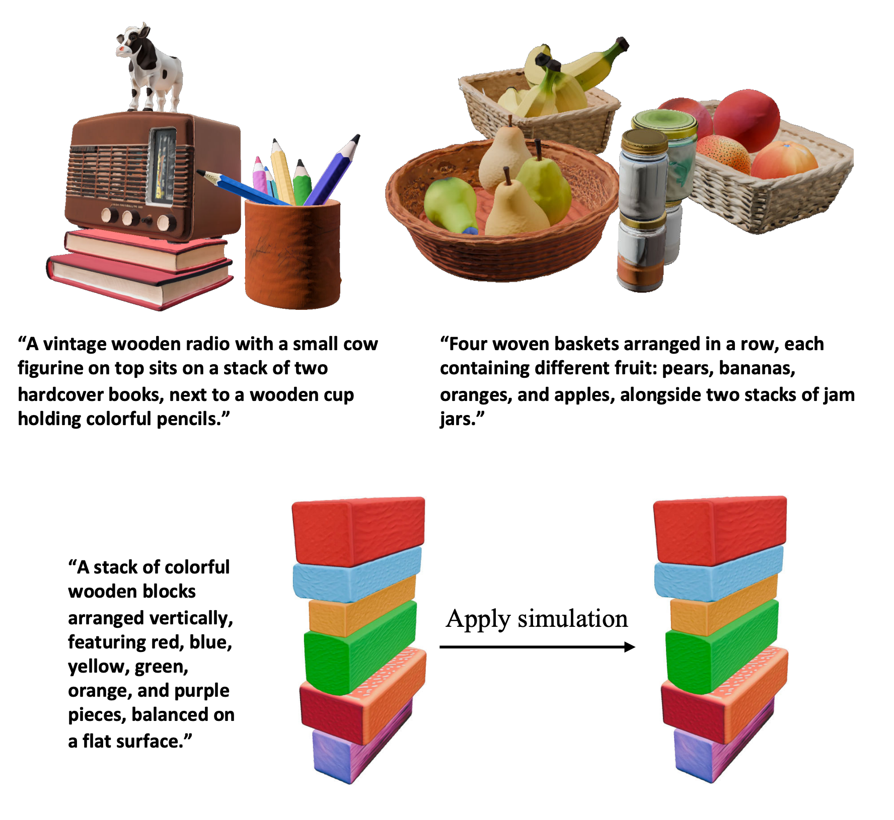
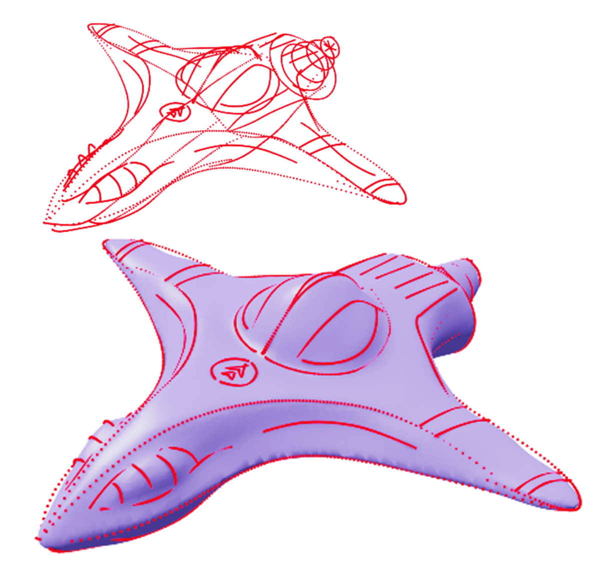
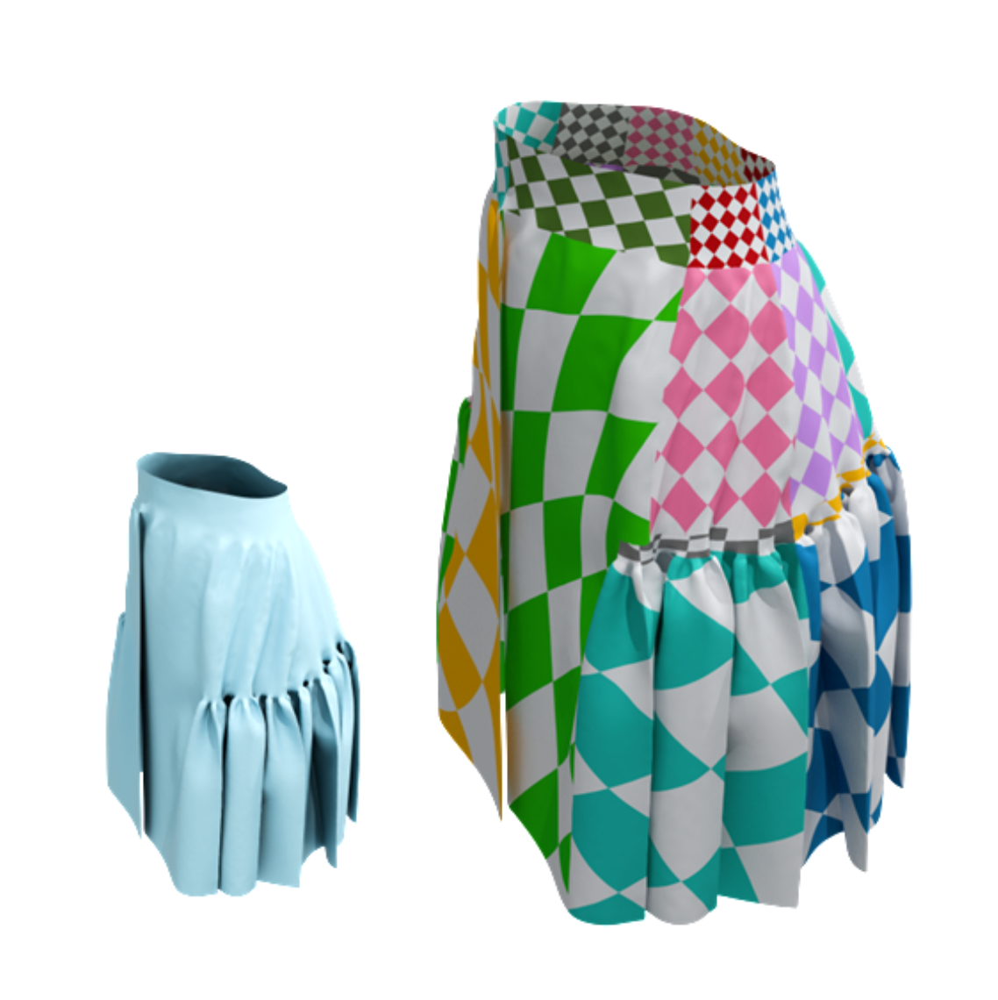
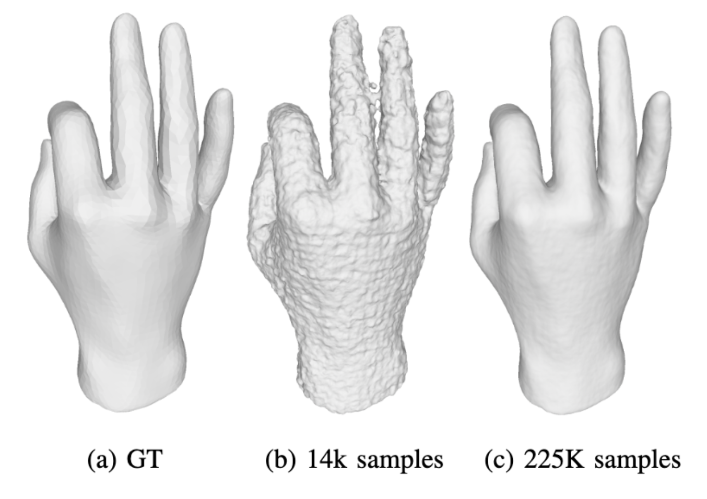
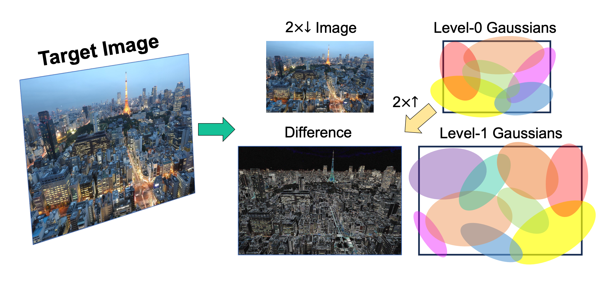
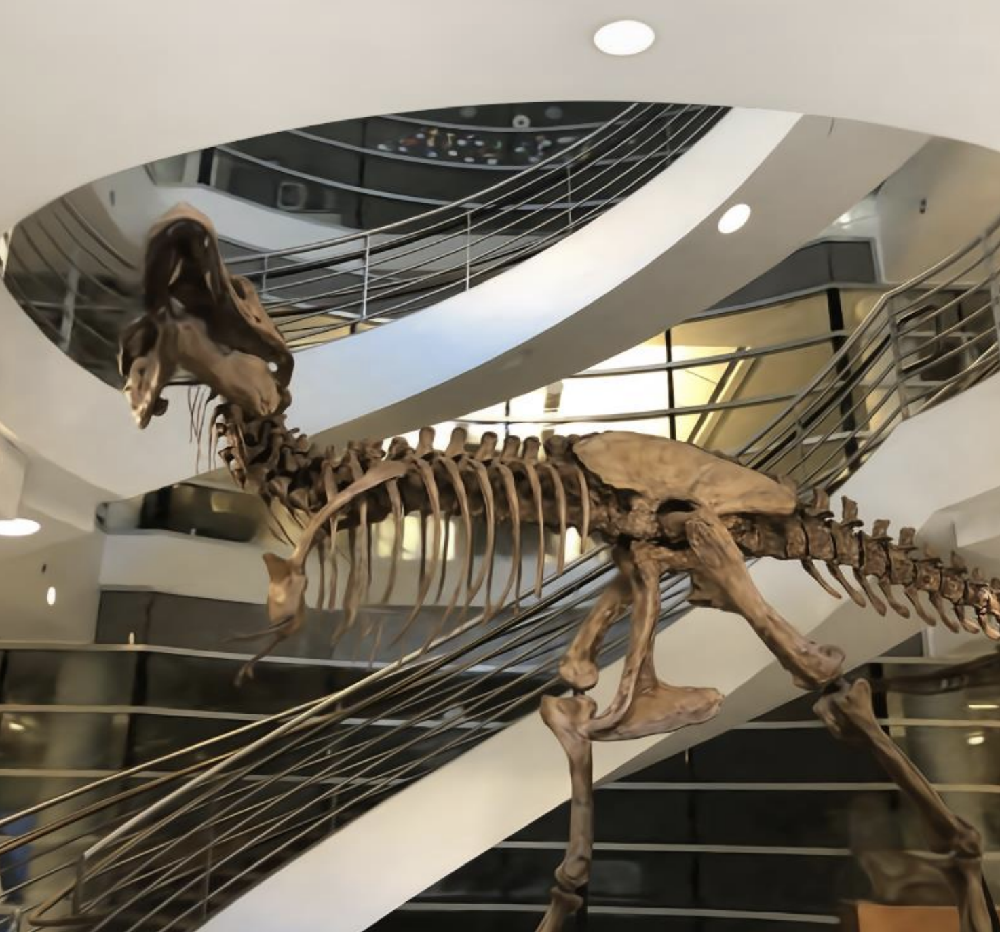
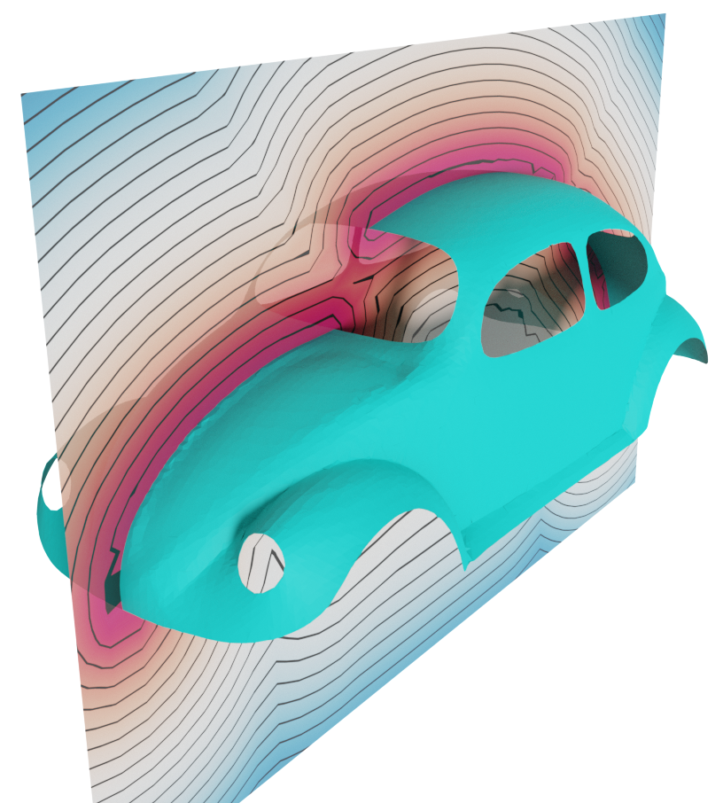

|
Guying Lin I'm a second year PhD student in the Computer Science Department at Carnegie Mellon University supervised by Prof. Minchen Li. Previously, I earned my M.Phil. from the University of Hong Kong, where I was supervised by Prof. Taku Komura and Prof. Wenping Wang. Prior to that, I obtained my B.Eng. (Hons) from Zhejiang University. I am always open to collaboration and discussion — feel free to drop me an email if you are interested in my research.
|
{kind=link}
Experience
|
ResearchI am generally interested in the intersection of computer graphics and 3D vision. Currently, I'm working on physics-augmented 3d reconstruction and generation. |
|
 |
PAT3D: Physics-Augmented Text-to-3D Scene Generation
Guying Lin, Kemeng Huang, Michael Liu, Ruihan Gao, Hanke Chen, Lyuhao Chen, Beijia Lu, Taku Komura, Yuan Liu, Jun-Yan Zhu, Minchen Li, International Conference on Learning Representations (ICLR), 2026 project page / arXiv / press Intersection-free and physically plausible 3D scene generation with rich contact interactions from text. |
|
 |
NeuVAS: Neural Implicit Surfaces for Variational Shape Modeling
Pengfei Wang, Qiujie Dong, Fangtian Liang, Hao Pan, Lei Yang, Congyi Zhang, Guying Lin, Caiming Zhang, Yuanfeng Zhou, Changhe Tu, Shiqing Xin, Alla Sheffer, Xin Li, Wenping Wang ACM Transactions on Graphics (TOG), 2025 arXiv A variational shape modeling framework leveraging neural implicit surfaces for flexible, high-quality geometric editing and reconstruction. |
|
 |
NeuPPS: Neural Piecewise Parametric Surfaces
Lei Yang, Yongqing Liang, Xin Li, Congyi Zhang, Guying Lin, Cheng Lin, Alla Sheffer, Scott Schaefer, John Keyser, Wenping Wang ACM Transactions on Graphics (TOG), 2025 arXiv A neural representation that models complex shapes using piecewise parametric surfaces, enabling flexible, efficient, and high-fidelity geometry modeling. |

|
Patch-Grid: An Efficient and Feature-Preserving Neural Implicit Surface Representation
Guying Lin*, Lei Yang*, Congyi Zhang, Hao Pan, Yuhan Ping, Guodong Wei, Taku Komura, John Keyser, Wenping Wang ACM Transactions on Graphics (TOG), 2025 (presented at SIGGRAPH 2025) arXiv / code A unified neural implicit representation that models complex shapes efficiently, preserves sharp features, and effectively models surfaces with open boundaries and thin geometric features. |
|
 |
On Optimal Sampling for Learning SDF Using MLPs Equipped with Positional Encoding
Guying Lin*, Lei Yang*, Yuan Liu, Congyi Zhang, Junhui Hou, Xiaogang Jin, Taku Komura, John Keyser, Wenping Wang IEEE Transactions on Visualization and Computer Graphics (TVCG), 2025 arXiv Studying the optimal sampling problem in network training for modeling neural implicit surfaces, especially those with rich geometric details. |
|
 |
Large Images are Gaussians: High-quality Large Image Representation with Levels of 2D Gaussian Splatting
Lingting Zhu, Guying Lin, Jinnan Chen, Xinjie Zhang, Zhenchao Jin, Zhao Wang, Lequan Yu, AAAI Conference on Artificial Intelligence (AAAI), 2025 arXiv An effective representation that enhances 2DGS for large image fitting through optimized strategies and a Level-of-Gaussian approach. |
|
 |
ProLiF: Progressively-connected Light Field network for efficient view synthesis
Peng Wang, Yuan Liu, Guying Lin, Jiatao Gu, Lingjie Liu, Taku Komura, Wenping Wang Computers & Graphics, 2024 project page / arXiv / code A Progressively-connected Light Field network for the novel view synthesis of complex forward-facing scenes which is able to achieve significantly better rendering quality than the vanilla neural light fields and comparable results to NeRF-like rendering methods. |
|
 |
Surface Extraction from Neural Unsigned Distance Fields
Congyi Zhang*, Guying Lin*, Lei Yang, Xin Li, Taku Komura, Scott Schaefer John Keyser, Wenping Wang In Proceedings of the IEEE/CVF International Conference on Computer Vision (ICCV), 2023 project page / arXiv / code A robust and efficient method to extract a high-quality surface from neural unsigned distance functions (UDFs). |
MiscellaneaIn addition to graphics, I have a profound appreciation for literature and history, particularly the works of Yasunari Kawabata, Orhan Pamuk, Jared Diamond, and Dafu Yu. During my undergraduate studies, I was selected for an honors program in the humanities and social sciences, where I took fascinating courses in aesthetic literature, world civilization history, Eastern and Western philosophy, and classical Chinese literature. I enjoy engaging with people to uncover and document their stories. So I interned as a journalist at Qianjiang Evening News, one of the leading news organizations in China, for six months. During my time there, I had the invaluable opportunity to publish over 20 news articles under the guidance of the Chief Reporter. I also enjoy painting, cooking, K-pop dancing, and running. |
|
Last updated Dec. 2025. Template from Jon Barron. |